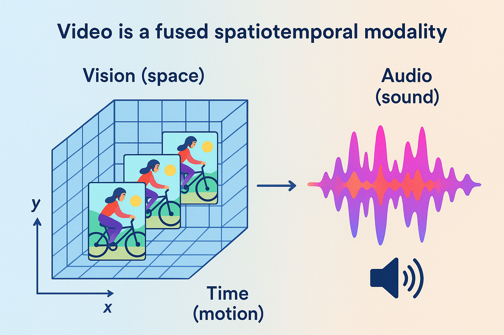
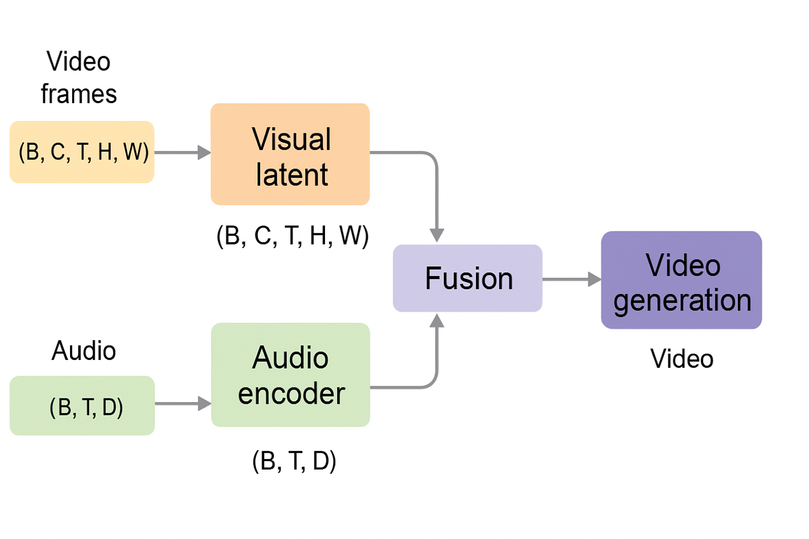
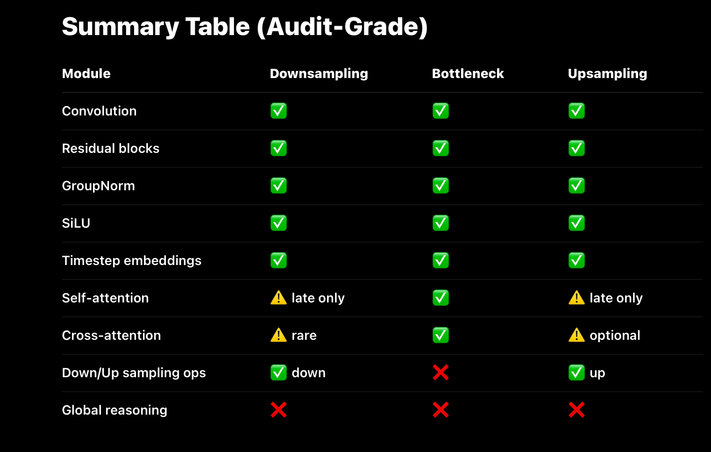

What the Latent Manifold Actually Is
What the Latent Manifold Actually Is (Foundational)
At the core of every Deep learning model lies a structure that is rarely explained clearly: the latent manifold. This manifold is not a storage space, a memory bank, or an internal database. It is an extremely high-dimensional geometric substrate that emerges during training as the model learns to organize patterns in its data. Each training step slightly reshapes this space, bending and stretching it so that similar patterns lie near one another while incompatible patterns are pushed apart. Over time, this process produces a continuous, structured geometry in which the statistical regularities of the training data are embedded.
Crucially, this manifold is dynamic rather than static. It behaves less like a lookup table and more like a fluid dynamical system, where trajectories through the space correspond to coherent transformations of data. In video models, these trajectories encode how scenes, objects, and motions tend to evolve over time. The model does not retrieve examples from this space; it moves through it, guided by learned gradients that reflect the structure of the data distribution. Meaning, motion, and coherence are therefore not stored explicitly, but arise from how this space is shaped and navigated.
Every concept a model appears to “know” — objects, motion, continuity, lighting, interaction — exists only as geometry in this latent manifold. Individual neurons do not represent concepts, and no parameter corresponds to a specific example. Instead, concepts are realized as regions, directions, and curvatures in this space, distributed across billions of parameters. Generation is the act of tracing a path through this learned geometry, producing outputs that are novel yet constrained by the manifold’s structure. Understanding this latent substrate is essential, because every architectural component in models like Sora — downsampling paths, bottlenecks, attention layers, and diffusion dynamics — exists solely to shape, transform, and traverse this space.
fundamentals
Modern video diffusion models are not monolithic networks that “generate videos end-to-end.” They are structured systems composed of three functionally distinct sub-components, each responsible for a different stage of representation and transformation: a downsampling path, a latent bottleneck, and an upsampling path. These components do not correspond to semantic stages like “understanding” or “generation,” but instead define how information is compressed, transformed, and reconstructed within the model. The downsampling path progressively converts high-dimensional inputs (such as pixel grids or latent frames) into compact latent representations; the bottleneck operates on this compressed state to model global structure and long-range dependencies; and the upsampling path reconstructs coherent outputs from the refined latent state. This encoder–bottleneck–decoder layout is a computational scaffold, not a reasoning pipeline — and understanding this distinction is essential for understanding how systems like Sora actually work.
Video is not simply a sequence of images — it is a fused spatiotemporal modality that combines:
⸻
Vision (space) — per-frame spatial detail (objects, texture,colors,lighting). Time (motion) — frame-to-frame dynamics, causality, and temporal dependencies. Audio (sound) — speech, music, ambient noise, and prosody tightly synchronized with visuals.

debunking misconception
Debunking a Core Misconception
Before breaking down the internal modules of video diffusion models, it is critical to dispel one of the most persistent misconceptions in AI: neural networks do not store data, examples, or media. During training, deep learning models do not copy, cache, or memorize raw inputs. Instead, they encode, embed, entangle, and extrapolate statistical patterns across billions of parameters, distributing structure across the entire network. There are no stored videos inside a video model, no stored images inside an image model, and no stored sentences inside a language model — only learned patterns of how data tends to vary, correlate, and evolve. This is precisely why generated outputs are not copies of training examples, but novel recombinations constrained by learned structure. Individual neurons or parameters never represent specific examples; meaning exists only as distributed geometry across the latent space. Neural networks are therefore not lookup tables, not databases, and not retrieval systems — they are pattern-learning dynamical systems whose outputs emerge from transformation, not recall.
what patterns
What “Patterns” Mean in Video Models (Concrete Examples)
When a video diffusion model is trained, it does not learn videos.
It learns regularities in how the world tends to change over time.
Those regularities form the latent manifold the model operates on.
Below are examples of pattern classes that are distributed across billions of parameters.
⸻
⸻
⸻
⸻
⸻
⸻
Low-Level Spatiotemporal Patterns
These are the most basic statistical regularities:
Edges persist across adjacent frames Textures deform smoothly, not randomly Motion tends to be continuous, not discontinuous Noise has different statistics than structure Lighting changes are usually gradual, not instantaneous
These patterns define visual coherence.
⸻
⸻
⸻
⸻
⸻
⸻
Object Persistence Patterns
The model learns that:
Objects do not randomly disappear Occluded objects tend to reappear Objects maintain identity across frames Shape changes follow physical constraints Size changes correlate with depth and motion
This is not memory, but learned persistence statistics.
⸻
⸻
⸻
⸻
⸻
⸻
Motion Dynamics Patterns
Across massive datasets, the model learns distributions such as:
How humans walk, turn, gesture, and fall How vehicles accelerate, brake, and turn How animals move differently from humans How fluids ripple versus how solids deform How inertia constrains movement
These are motion priors, not simulations.
⸻
⸻
⸻
⸻
⸻
⸻
Camera and Viewpoint Patterns
Video datasets strongly encode:
How cameras pan, tilt, and zoom Common framing conventions Motion blur characteristics Depth-of-field behavior Perspective distortions
This is why generated videos often “feel filmed.”
⸻
⸻
⸻
⸻
⸻
Temporal Cause–Effect Regularities
The model internalizes correlations like:
Actions precede reactions Collisions precede rebounds Forceful motion precedes deformation Release precedes falling Acceleration precedes displacement
Importantly:
These are statistical correlations, not causal reasoning.
⸻
⸻
⸻
⸻
⸻
⸻
Human Behavior Patterns
From large-scale data, models learn:
Typical human posture transitions Facial expression dynamics Gaze and attention cues Social spacing norms Gesture–speech timing alignment
This is why human motion looks plausible even without understanding intent.
⸻
⸻
⸻
⸻
⸻
Environmental Dynamics
The latent space encodes patterns such as:
Fire flickers upward Smoke diffuses and curls Water flows downhill Wind affects light objects more than heavy ones Shadows move consistently with light sources
Again: learned regularities, not physics engines.
⸻
⸻
⸻
⸻
⸻
Compositional Scene Structure
The model learns spatial arrangements:
Roads under vehicles Sky above ground Furniture aligned with floors Faces above torsos Objects supported by surfaces
Violations of these patterns are penalized during training.
⸻
⸻
⸻
⸻
Cross-Modal Alignment Patterns (When Applicable)
In multimodal video models:
Lip motion aligns with speech rhythm Sound intensity correlates with motion intensity Visual events cluster around audio transients
These patterns bind modalities into a shared latent structure.
The Key Point (Explicitly)
None of these patterns exist as:
Stored videos Stored frames Stored clips Stored examples
They exist as distributed constraints on the latent space.
A generated video is:
A trajectory through this learned manifold, not a replay of data.
This is why outputs can be:
Novel Highly varied Unseen in training Yet still coherent
Tensors
In state-of-the-art video generation systems, fusion does not mean that raw audio waveforms are directly concatenated with video pixels. Instead, audio is first encoded into a temporal latent representation, while video is encoded into a spatiotemporal latent volume. These representations are then jointly conditioned and fused at the latent level—typically through mechanisms such as cross-attention, feature alignment along the time axis, or shared latent processing blocks. This allows the denoising process to model correlations between motion and sound (e.g., lip movement and speech, impacts and audio cues) as part of a unified generative trajectory. The result is synchronized audiovisual generation without requiring separate pipelines or post-hoc alignment.
📐 Tensors: The Substrate of All Pattern Learning
At the deepest level, neural networks do not reason in words, objects, or scenes. They operate exclusively on tensors—high-dimensional numerical arrays that define what patterns can exist, interact, and be learned at all.
Every architectural decision ultimately reduces to a question of tensor structure.

What a Tensor Really Represents
A tensor is not just “data.”
It is a geometric substrate that constrains learning.
Each dimension of a tensor defines an axis along which patterns can be extracted and correlated. If a pattern cannot be expressed along the available axes, the model cannot learn it, no matter how many parameters it has.
In generative models, tensors determine:
What correlations are possible What interactions are local vs global What structure can persist through layers What information survives denoising
Why Video Is the Most Demanding Case
Video generation requires tensors that preserve multiple interacting dimensions simultaneously:
(B, C, T, H, W)
Where:
B = batch C = channels (learned pattern maps) T = time H, W = spatial dimensions
This tensor does not store pixels.
It stores patterns evolving through time and space.
Because time is an explicit axis, the model can learn:
Motion continuity Temporal causality-like correlations Object persistence Rhythm and pacing
Image models lack this axis.
Video models cannot.
Channels as Pattern-Carrying Dimensions
The channel dimension (C) is where most representational power lives.
Each channel is a learned detector for a specific class of pattern:
Early layers: edges, textures, short-term motion Middle layers: object parts, motion flows Deep layers: scene-level dynamics, long-range temporal structure
As depth increases, channel count grows:
32 → 64 → 128 → 256 → …
This expansion allows the model to embed many interacting patterns simultaneously without collapsing them into a single representation.
Multimodal Tensor Alignment (Video + Audio)
In modern video models, audio is not treated as an afterthought.
Audio is encoded into a temporal tensor:
(B, T, D)
This tensor is aligned along the same time axis (T) as the visual latent. Fusion occurs by conditioning or joint processing, allowing correlations such as:
Lip movement ↔︎ speech Impact ↔︎ sound Rhythm ↔︎ motion cadence
Crucially, this alignment happens in tensor space, not at the level of decoded outputs.
Why Tensors Determine What a Model Can Learn
Neurons do not “discover” patterns arbitrarily.
They respond to tensor geometry.
If:
Time is not a dimension → temporal coherence cannot emerge Channels are too few → patterns must be discarded Spatial structure is flattened → locality is destroyed
This is why architectural choices around tensor shape matter more than raw parameter count.
The tensor defines the hypothesis space.
The network merely explores it.
Diffusion Models as Tensor Refiners
Diffusion models do not build representations from scratch at each step.
They:
Start with a tensor full of noise Iteratively nudge it through the latent manifold Preserve structure across dimensions Refine correlations rather than overwrite them
This is why diffusion models rely heavily on:
Convolutions (respect tensor geometry) Residual connections (preserve information) Attention (selective global interaction) Minimal MLP usage (avoid structure destruction)
Key Takeaway
Tensors are not an implementation detail.
They are the medium of intelligence in deep learning.
In video generation, where space, time, and modality must remain coherent, tensor structure is the primary reason modern models can produce stable, synchronized, long-range outputs at all.
Everything else—attention, conditioning, diffusion—is downstream of this choice.
Core Architectural Modules
Core Architectural Modules in Veo and sora -Class Video Diffusion Models
🔹 1. Spatiotemporal Convolutional Layers (3D or Factorized)
Veo-class video diffusion models rely on spatiotemporal convolutional layers to extract structure across space and time. These layers operate on latent feature volumes rather than raw pixels, enabling efficient pattern extraction at multiple scales.
Convolutional filters slide across height, width, and temporal depth, allowing the model to learn:
Spatial structure: edges, textures, shapes, object boundaries Temporal continuity: motion trajectories, transitions, persistence Cross-frame correlations: how visual patterns evolve over time
As depth increases, representations become more abstract and semantically structured, moving from local visual features toward higher-level motion and scene organization.
In multimodal video models, visual latents may be jointly conditioned with audio-related structure through shared or coupled latent representations, allowing the network to learn correlations between motion and sound without treating them as independent pipelines.
⸻
⸻
⸻ ⸻
⸻
⸻
⸻
🔹 Channels as Pattern Maps
Each convolutional layer produces multiple channels, which act as learned pattern maps:
Early layers encode low-level structure (edges, color gradients, short-range motion) Intermediate layers encode object-level and motion-level structure Deep layers encode long-range temporal coherence, scene layout, and interaction patterns
Channel capacity typically increases with depth (e.g., 32 → 64 → 128 → 256 → …), allowing progressively richer representations. Temporal awareness emerges naturally because convolutions operate across time as part of the latent volume.
⸻
⸻
⸻
⸻
⸻
⸻
🔹 2. SiLU (Swish) Nonlinear Activations
Diffusion models use SiLU (Sigmoid Linear Unit) as their primary nonlinearity:
(x) = x (x)
Unlike ReLU, SiLU does not hard-zero negative activations. Instead, it smoothly attenuates them, preserving gradient flow and enabling continuous transformations of latent features.
This property is critical in diffusion models, where the network must remain stable across many noise levels and repeatedly refine latent representations. SiLU supports:
Smooth signal propagation Stronger gradient flow Reduced dead activations Rich, continuous feature evolution
⸻
⸻
⸻
⸻
⸻
🔹 3. Group Normalization (Not BatchNorm)
Modern diffusion models universally use Group Normalization rather than Batch Normalization.
GroupNorm normalizes activations within each individual sample, across groups of channels, rather than across the batch. This makes it far more stable when:
Batch sizes are small (common in diffusion training) Inputs are heavily noisy Temporal dimensions vary
GroupNorm stabilizes training by keeping latent activations well-conditioned throughout the denoising process and is standard in architectures such as Stable Diffusion, Imagen, and video diffusion UNets.
⸻
⸻
⸻
⸻
⸻
🔹 4. Attention in Diffusion U-Nets
Attention is used selectively, not universally, due to its quadratic computational cost.
Self-Attention
Self-attention allows latent tokens to interact globally, enabling the model to capture long-range dependencies across space and time.
Operates on compressed latent representations Typically placed in the bottleneck Enables coordination across distant regions and frames
This is where global coherence emerges—not because attention “reasons,” but because it enables global pattern interaction among already-compressed features.
Cross-Attention
Cross-attention injects conditioning information (e.g., text embeddings) into the latent representation.
Attention flows from latent video features → conditioning embeddings Enables alignment between regions of the video and semantic concepts in the prompt Used in text-to-video systems like Veo-class models
Cross-attention does not introduce understanding; it biases latent evolution toward prompt-aligned regions of the learned manifold.
⸻
⸻
⸻
⸻
⸻
⸻
🔹 5. Upsampling and Skip Connections
During upsampling, the latent representation is progressively expanded back toward higher resolution.
Learned upsampling layers restore spatial and temporal detail Skip connections concatenate features from corresponding downsampling layers This preserves fine-grained structure that would otherwise be lost
Skip connections allow the decoder to combine:
Early spatial precision (shape, color, texture) Intermediate motion traces High-level global structure established in the bottleneck
They are essential for maintaining sharpness, continuity, and coherence across frames.
⸻
⸻
⸻
⸻
⸻
⸻
🔹 6. Final Projection to Video Space
The final stage applies a projection head—typically a convolution—to map the refined latent representation back into observable video space.
This stage does not decode meaning or perform reasoning. It simply projects structured latent geometry into pixel values (and, if present, synchronized audio representations).
During inference, this projection occurs at each step of the reverse diffusion process, with successive steps progressively reducing noise and increasing coherence.
⸻
⸻
⸻
⸻
⸻
🔹7.
Temporal Conditioning / Embeddings
Used in: Downsampling + Bottleneck
In video diffusion models, timestep embeddings (and often temporal embeddings) are injected at multiple depths. These embeddings condition:
Noise level Temporal position Frame relationships
They do not belong exclusively to the bottleneck; they influence representation formation at all scales.
Canonical Diffusion U-Net Module Set (Image and Video)
Across state-of-the-art diffusion systems, the same core components recur:
Convolutions (2D or 3D) Strided downsampling Residual blocks Group Normalization SiLU activations Self- and cross-attention (primarily in bottleneck layers) Skip connections Noise scheduling Latent-space sampling
downsampling
Downsampling: Compressing Structure Into the Latent Manifold
Downsampling exists for a single fundamental reason: high-resolution video is too large and too redundant to model directly. Raw video frames contain millions of correlated values per frame, most of which encode local detail rather than global structure. If a model attempted to operate on this space directly, it would be computationally infeasible and statistically inefficient. The role of the downsampling path is therefore to progressively compress spatial and temporal information into a lower-dimensional latent representation while preserving the structure necessary for coherent generation.
This compression is achieved through stacked convolutional blocks that reduce resolution while increasing representational capacity. Convolutions with learned filters extract local patterns such as edges, textures, and short-range motion; strides and pooling reduce spatial dimensions; and padding preserves alignment and boundary information. As resolution decreases, each latent unit comes to represent a larger receptive field in the original video, allowing the model to move from local detail toward increasingly global structure. Importantly, downsampling does not discard information arbitrarily — it reshapes it, folding correlated features into a more compact geometry within the latent manifold.
Each downsampling stage typically consists of multiple residual blocks, ensuring that information can flow through the network without degradation. Residual connections stabilize training and allow fine-grained detail to persist even as representations are compressed. Nonlinearities such as SiLU introduce smooth, non-saturating transformations that help preserve gradient flow, while normalization layers regulate activation scales to keep the latent space well-conditioned. Together, these components allow the model to contract high-dimensional video data into a dense latent substrate that is both expressive and tractable.
By the end of the downsampling path, the model is no longer operating on pixels or frames, but on structured latent features that encode object identity, motion tendencies, spatial relationships, and temporal continuity. This compressed representation is what makes global reasoning possible at all: without downsampling, the model would be overwhelmed by surface detail and unable to model long-range dependencies. The downsampling path does not perform “understanding” — it performs geometric compression, shaping the latent manifold into a form where higher-level structure can be modeled efficiently.
deep objective
Downsampling (Reframed Around the Real Objective)
The purpose of the downsampling path is not merely to reduce resolution or save computation. Its deeper role is to break the video stream apart into a form where every learnable pattern can be encoded, embedded, and extrapolated across the network’s parameters. Raw video frames are too entangled, too redundant, and too high-dimensional for effective representational learning. By progressively decomposing frames into structured latent features, the model creates the conditions necessary for deep pattern extraction.
At every downsampling stage, the model is not “throwing information away,” but redistributing it. Spatial detail, motion cues, object boundaries, textures, and temporal correlations are reorganized into increasingly abstract representations. This process allows patterns that are local in pixel space to become global in latent space, enabling the model to internalize regularities that would otherwise remain buried in raw data. Video must be broken down in this way because patterns cannot be learned directly from unstructured streams; they must first be separated, compressed, and geometrically organized.
Fundamentally, all deep learning models operate under the same principle: capability emerges from how deeply patterns are extracted and recomposed. The richer, more dynamic, and more entangled these pattern representations become within the weights, the more powerful the model’s latent manifold becomes. Downsampling is therefore not an implementation detail — it is a prerequisite for building the complex internal geometry that makes coherent video generation possible.
archecture of downsampling
Canonical Module Inventory by Stage (Diffusion UNet)
- Global / Cross-Cutting Modules (Used Everywhere)
These are not stage-specific and should be treated as conditioning infrastructure:
✅ Timestep / Noise Embeddings
Sinusoidal or learned embeddings Injected into every residual block Purpose: condition the entire network on diffusion step
Correct in your code.
✅ Conditioning Embeddings (e.g. CLIP)
Projected to model channel width
Injected via cross-attention
Sometimes added as bias in residual blocks (older designs)
Correct in your code.
- Downsampling Path (Encoder)
Purpose: aggressive pattern extraction + geometric compression
Constraint: attention mostly too expensive early
Modules that are there
✅ Convolutions
Kernel sizes: usually 3×3
Stride > 1 used for resolution reduction
Padding to preserve alignment
Correct.
✅ Residual Blocks
Conv → Norm → SiLU → Conv
Skip connections (identity or 1×1 conv)
Time embedding injected inside block
Correct.
✅ Normalization
GroupNorm (most common in diffusion) LayerNorm less common in conv-heavy models
Correct.
✅ Nonlinearity
SiLU / Swish Smooth gradients, stable diffusion training
Correct.
⚠️ Attention (Limited / Late Only)
Usually absent in early downsampling May appear in last downsampling stage at SOTA scale Only when resolution is already low
Your use_attn mask matches this correctly.
Modules that SHOULD NOT be here
❌ Global self-attention at high resolution
❌ Any form of causal reasoning
❌ Token-level transformer blocks
If you see those, the architecture is inefficient or experimental.
bottleneck
The Bottleneck: Where Global Pattern Interaction Becomes Possible
Once the video stream has been sufficiently decomposed and compressed by the downsampling path, the model reaches the latent bottleneck. This stage exists for one reason only: it is the first point in the architecture where global pattern interaction becomes computationally viable. Prior to compression, the sheer dimensionality of video data makes any form of global interaction intractable. After compression, the model operates on a dense latent representation where each unit already aggregates information over large spatial and temporal regions.
This is why attention mechanisms are primarily concentrated in the bottleneck. Self-attention scales quadratically with the number of tokens, making it prohibitively expensive at high resolutions. Applying attention directly to pixel-level or early convolutional representations would require orders of magnitude more computation than is feasible, even at the largest scale. By contrast, the bottleneck contains far fewer latent tokens, each representing a rich summary of underlying structure. Attention applied here allows the model to integrate information across the entire scene — objects, motion, context, and temporal dependencies — at a manageable cost.
It is in this bottleneck that models like Sora exhibit their most impressive behavior. Long-range temporal coherence, object persistence across occlusion, consistent camera motion, and coordinated scene dynamics all emerge from global interaction between compressed patterns. The model is no longer reasoning about pixels or frames, but about abstract latent features that encode how the world tends to evolve. This interaction gives rise to behavior that resembles a world model, even though no explicit world state or physics engine exists inside the system.
However, this same architectural choice also defines the system’s limitations. The bottleneck enables global correlation, not explicit causation. Attention allows latent features to influence one another, but it does not create structured variables, persistent state, or causal mechanisms. The model learns what usually follows what, not what must follow from underlying rules. As a result, Sora can generate videos that are highly coherent over long durations, yet still violate physical laws, fail under counterfactual changes, or drift when pushed beyond the statistical envelope of its training data. These are not implementation flaws — they are direct consequences of a system optimized for pattern extraction rather than causal modeling.
archecture in bottleneck
Bottleneck (Latent Core)
Purpose: global pattern interaction
This is the architectural “event horizon”
Modules that MUST be here
✅ Residual Blocks (Pre + Post Attention)
Preserve stability Allow attention to be a perturbation, not replacement
Correct.
✅ Self-Attention
Operates over flattened latent tokens Allows every compressed feature to interact
Correct.
✅ Cross-Attention (Conditioning)
CLIP / text embeddings attend into latent tokens Conditioning happens here most effectively
Correct.
✅ Convolutions (Stride = 1)
Feature mixing, not compression Preserve spatial topology
Correct.
✅ Normalization + SiLU
Same role as everywhere else
Correct.
Important clarification (you already understand this)
The bottleneck is not special because it has new modules
It is special because the representation is maximally compressed
That’s why attention suddenly “works”.

The Upsampling Stage
The Upsampling Stage: Reconstructing Structure From Compressed Patterns
The purpose of the upsampling stage in diffusion U-Nets is not to add new information or reasoning. Its role is purely geometric: to increase spatial (and temporal) resolution while preserving the structure that has already been extracted, compressed, and globally coordinated earlier in the network.
During downsampling, convolutional kernels and strides progressively shrink spatial dimensions in order to extract patterns efficiently. By the time the latent reaches the bottleneck, it encodes high-level structure—scene layout, motion tendencies, global relationships—but at very low resolution. Upsampling exists to project that structure back into higher-resolution tensor space.
Increasing Spatial Dimensions
Upsampling layers (e.g., transposed convolutions or learned interpolation + convolution) incrementally restore height and width—and, in video models, temporal resolution when applicable.
At each stage:
Spatial dimensions increase Channel depth may decrease The latent representation becomes more detailed but not more “informed”
No new semantics are introduced. The model is simply expanding the latent geometry under constraints already established.
Skip Connections: Pattern Reintroduction, Not Memory
A critical component of the upsampling stage is the use of skip connections from corresponding downsampling layers.
These connections:
Concatenate feature maps from earlier stages Reintroduce fine-grained spatial and motion detail Prevent the loss of local structure during compression
Importantly, skip connections do not reintroduce raw inputs or stored examples. They reintroduce earlier-extracted patterns—edges, textures, motion traces—that were already encoded in the latent space before aggressive downsampling.
This allows the decoder-side residual blocks to combine:
Global structure (from the bottleneck) Local precision (from early layers)
Residual Refinement During Reconstruction
As in the downsampling path, the upsampling stage relies heavily on residual blocks. These blocks refine representations incrementally rather than overwriting them.
Residual refinement ensures:
Stable gradient flow Preservation of coherence established earlier Controlled integration of skip-connected patterns
The network does not “decide” what details to add. It selectively integrates existing pattern information to produce a coherent high-resolution output.
What the Upsampling Stage Does
Not
Do
It is important to be explicit about what upsampling does not provide:
No reasoning No memory No causal enforcement No global correction mechanism
Any incoherence present at the bottleneck will persist—or even be amplified—during upsampling. The upsampling path cannot fix logical or temporal inconsistencies; it can only faithfully expand what already exists in the latent representation.
Key Takeaway
The upsampling stage reconstructs detail, not understanding.
It increases spatial resolution, reintegrates earlier pattern information via skip connections, and refines structure through residual blocks—but it does not introduce new constraints or intelligence. Coherence is determined upstream; upsampling merely makes it visible.
Upsampling Path
Upsampling Path (Decoder)
Purpose: structured expansion under global constraints
No new learning, only reconstruction
Modules that SHOULD be here
✅ Transposed Convolutions / Upsampling + Conv
Restore spatial resolution Often paired with residual blocks
Correct.
✅ Skip Connections
Carry fine-grained structure forward Prevent information loss
Correct.
✅ Residual Blocks
Same structure as encoder Conditioning still injected
Correct.
⚠️ Attention (Optional, Late Only)
Sometimes used in late upsampling Helps preserve global coherence Not required at all resolutions
Your design matches SOTA practice.
Modules that SHOULD NOT be here
❌ New global reasoning
❌ Memory mechanisms
❌ Causal state updates
Upsampling does not add intelligence.
- Output Head
✅ Normalization
✅ SiLU
✅ Final Conv → image/video space
This is a linear readout, nothing more.
Correct.

CLIP
How CLIP-Style Conditioning Guides Sampling in Video Diffusion Models
In state-of-the-art text-to-video diffusion models such as Sora-class systems, text prompts do not merely initialize generation. Instead, they continuously condition the entire reverse diffusion trajectory, shaping how noise is transformed into structured video over time.
This is made possible by multimodal embedding and fusion architectures inspired by CLIP-style contrastive training, adapted to operate over spatiotemporal video representations.
⸻
⸻
⸻
⸻
- Text–Video Embedding Alignment
CLIP-style models are trained to embed language and visual content into a shared semantic space, where proximity corresponds to statistical alignment in the training data.
When extended to video generation:
Text tokens are produced by a text encoder (e.g. CLIP, T5-derived, or transformer-based encoders) Visual tokens are extracted from video frames via spatiotemporal encoders (e.g. ViT-like or convolutional backbones) The model learns correspondences between textual descriptions and visual patterns evolving over time
Rather than performing a one-time matching step, these embeddings are used to condition the latent representation that the diffusion model operates on.
⸻
⸻
⸻
⸻
⸻
⸻
⸻
- Conditioning the Reverse Diffusion Process
Once generation begins, the model starts from Gaussian noise in latent space and applies a learned denoising function across many timesteps.
During this process:
Text embeddings act as a conditioning signal Conditioning is injected via mechanisms such as cross-attention, biasing latent updates Each denoising step is nudged toward regions of latent space that statistically correspond to the prompt
This means the prompt influences every refinement step, not just the initial layout. The generated video is therefore shaped continuously, not corrected afterward.
This process is conceptually similar to classifier-free guidance (CFG), but richer in practice because CLIP-style embeddings encode high-dimensional multimodal relationships, not simple class labels.
⸻
⸻
⸻
⸻
⸻
- Cross-Attention as the Primary Conditioning Mechanism
In modern text-to-video diffusion models, cross-attention is the primary mechanism through which text conditions video generation.
Attention flows from latent video features → text embeddings Each spatiotemporal region of the latent can selectively attend to semantic components of the prompt This enables fine-grained alignment between language and visual structure
For example:
“dragon” aligns with regions encoding wings, scales, tail motion “sunset” biases lighting, color gradients, and scene tone Action verbs bias motion patterns across frames
Cross-attention is typically concentrated in bottleneck or low-resolution latent stages, where global interaction is computationally feasible.
⸻
⸻
⸻
⸻
⸻
⸻
- Why CLIP-Style Fusion Enables Coherent Video Generation
Because language and visual patterns are embedded into a shared semantic space, the diffusion model can:
Sample latent trajectories consistent with the prompt across space and time Maintain temporal coherence (objects persist, motion flows smoothly) Preserve spatial consistency (scenes remain stable) Align audiovisual events when audio conditioning is present
Importantly, this does not involve storing examples or copying training data. The model learns statistical structure, not individual instances.
Architectural Note (Important)
Sora-class video diffusion models operate on spatiotemporal latent volumes, preserving spatial and temporal structure throughout the network. Unlike earlier approaches that flattened features for dense layers, modern systems maintain structured latent geometry at every stage of denoising.
This allows motion, spatial layout, and (when present) audio-related conditioning to remain synchronized across frames—an essential property for long-range video coherence.
Key Takeaway
simplle quote that desribes it all in one “CLIP-style conditioning biases the trajectory of the latent state through the latent manifold, guiding denoising toward regions whose coordinates statistically correspond to the prompt.”
CLIP-style conditioning does not “tell the model what to draw.”
It reshapes the geometry of the latent manifold so that the reverse diffusion process naturally evolves toward regions corresponding to the prompt—step by step, across time.
denoising pipeline
🎬 The Denoising Pipeline: From Prompt to Video in Veo 3
At its core, Veo 3 is a latent video diffusion model, meaning it generates videos by iteratively transforming noise into structure within a compressed latent space. Rather than operating directly on pixels, the model learns to denoise a high-dimensional latent representation across space, time, and modality, gradually shaping it into a coherent audiovisual sequence aligned with a text prompt.
The generation process begins from noise and proceeds through many refinement steps, each one incrementally restructuring the latent state according to learned statistical patterns.
🔹 Step 1: Prompt Embedding (Text → Semantic Conditioning)
A user provides a prompt such as:
“A lion walking through a golden savanna at sunset, with ambient nature sounds.”
This prompt is passed through a powerful text encoder, likely a CLIP-like model fine-tuned on video–text pairs, which maps the input text into a dense semantic embedding. This embedding does not represent symbolic meaning or linguistic understanding. Instead, it encodes how the prompt statistically correlates with visual motion, scene composition, temporal dynamics, and audio structure in the training data.
This semantic embedding does not directly control every layer of the model. Instead, it is injected into the denoising network via cross-attention at selected depths, most prominently in the latent bottleneck where global interaction is computationally feasible.
Why this matters:
The model does not “understand” language. It conditions generation by aligning latent trajectories with regions of latent space that statistically correspond to the prompt.
⸻
⸻
⸻
⸻
⸻
⸻
⸻
🔹 Step 2: Noise Initialization (Latent Space Start)
Generation begins from pure Gaussian noise sampled in a structured latent space with dimensions corresponding to:
[channels, frames, height, width]
This latent does not represent RGB pixels. It is a compact, high-dimensional substrate shaped during training to encode spatiotemporal structure efficiently. At this stage, there is no image, no motion, and no sound—only noise constrained by the geometry of the learned latent manifold.
In Veo-style systems, visual and audio structure appear to be jointly modeled, either within a shared latent space or through tightly coupled latents that are denoised together. This enables the model to learn correlations between motion and sound over time, without requiring independent generation pipelines.
⸻
⸻
⸻
⸻
⸻
⸻
🔹 Step 3: Conditioned Denoising (Iterative U-Net Refinement)
The core of Veo 3’s generation process is an iterative denoising loop driven by a large 3D U-Net–style architecture. Across dozens or hundreds of diffusion steps, this network progressively removes noise from the latent representation, reshaping it into a structured trajectory consistent with the prompt.
Each denoising step applies the same network with different noise conditioning, gradually refining the latent state.
U-Net Internals (Per Denoising Step)
⸻
⸻
⸻
⸻
⸻
- Downsampling Path — Pattern Extraction and Compression
Uses 3D convolutions with learned downsampling (e.g. strided convolutions). Resolution is reduced while channel capacity increases. Residual blocks composed of: Convolution Group Normalization SiLU activation Skip connections
Purpose: aggressively decompose raw spatiotemporal structure into extractable patterns.
At this stage, the model captures local and mid-range regularities such as motion continuity, object boundaries, scene layout, and short-range temporal correlations. Global interaction is intentionally deferred due to computational cost.
⸻
⸻
⸻
⸻
- Bottleneck — Global Pattern Interaction
The bottleneck operates at the lowest spatial and temporal resolution, where the latent representation is maximally compressed. This is where global interaction becomes feasible.
The bottleneck consists of:
Residual convolutional blocks (stride = 1) GroupNorm + SiLU activations Self-attention, allowing all latent tokens to interact Cross-attention, injecting text conditioning into the latent state
At this point, each latent unit already summarizes large regions of space and time. Attention here enables correlations across the entire scene, motion arc, and temporal span, giving rise to long-range coherence.
Importantly, this interaction is statistical, not causal. The model learns what patterns tend to co-occur and evolve together, not explicit rules or world state.
⸻
⸻
⸻
⸻
- Upsampling Path — Structured Reconstruction
Uses learned upsampling (e.g. transposed convolutions) paired with residual blocks. Skip connections reintroduce high-frequency detail from earlier layers. Optional attention may appear in later upsampling stages at large scale.
No new structure is learned here. The upsampling path projects global decisions made in the bottleneck back to high resolution, reconstructing detailed frames while preserving coherence.
Key Insight
Each denoising step does not “add meaning.”
It reduces entropy, nudging the latent state toward regions of the manifold that align with learned audiovisual patterns conditioned on the prompt.
⸻
⸻
⸻
⸻
⸻
🔹 Step 4: Output Projection (Latent → Video)
After the final denoising step, the refined latent representation is passed through a final projection head that maps latent features back into pixel space. This produces the final RGB video frames.
If audio is present, it is either reconstructed from corresponding latent channels or generated through a tightly coupled audio decoder, maintaining synchronization with visual dynamics.
There is no semantic decoding at this stage—only a geometric projection from latent structure to observable output.
🧱 The Core Architectural Rhythm of Diffusion Models
Across the downsampling path, bottleneck, and upsampling path, diffusion models rely on a highly repetitive architectural motif that accounts for the vast majority of computation:
Conv → GroupNorm → SiLU → Conv → Residual → (Optional Attention)
Convolutions extract hierarchical spatiotemporal patterns. Group Normalization stabilizes activations across varying batch sizes. SiLU introduces smooth nonlinearity, supporting stable gradient flow. Residual connections enable deep refinement without information loss. Self- and cross-attention are strategically inserted—typically near the bottleneck—to enable global pattern interaction.
This stack repeats dozens of times throughout the network. Understanding this rhythm is key to understanding how diffusion models progressively refine latent representations rather than performing staged “encoding” and “decoding.”
✅ Pipeline Summary
Text Prompt
↓
CLIP-style Text Encoder
↓
Semantic Conditioning Embedding
↓
Gaussian Latent Noise
↓
Iterative Denoising via 3D U-Net
(Downsampling → Bottleneck → Upsampling + Skips)
↓
Refined Latent
↓
Final Projection Head
↓
Coherent Video (with synchronized audio)
weaknesses
Why People Want AI to Generate Films, Shows, and YouTube — and Why It Can’t (Yet)
There is a growing expectation that advanced video models will soon be able to generate full-length films, episodic television, or sustained YouTube-style content. This desire is understandable. Video is the dominant medium of modern culture, and short clips produced by frontier models already look cinematic at a glance.
However, this expectation collides directly with the architectural limits of current video generation systems.
The Mismatch Between Desire and Architecture
Cinema, television, and long-form video are not defined by visual quality alone. They require:
Persistent characters and identities Causal chains of events Narrative memory across scenes Consistency of setting, tone, and motivation Long-range temporal planning and payoff
These properties are not optional. They are what make something a story rather than a sequence of images.
Diffusion-based video models, by contrast, are optimized to generate short, locally coherent moments. They excel at producing visually rich clips, smooth motion, and plausible short-term dynamics—but they do not maintain a persistent world state or reason about consequences over time.
Why Scaling Visual Quality Is Not Enough
It is tempting to believe that higher resolution, longer clips, or more data will eventually close the gap. But the failure mode here is not cosmetic.
Without:
causal reasoning memory across generations explicit enforcement of invariants extreme representational compression enabling long horizons
a model cannot sustain narrative structure.
Visual realism can be scaled. Narrative coherence cannot—not without architectural mechanisms that enforce continuity, causality, and state.
This is why current systems can generate:
striking trailers short cinematic moments visually impressive demos
…but struggle to produce:
coherent multi-scene stories consistent characters across time long-form dialogue episode-level or film-level structure
Why Short Clips Work—and Long-Form Content Breaks
Over short durations, statistical patterns are sufficient. The model only needs to be locally plausible. Errors rarely surface before the clip ends.
As duration increases:
small inconsistencies compound latent drift accumulates lack of causal enforcement becomes visible identity and motion coherence degrade
This is not a training failure. It is the expected behavior of a system that samples patterns without maintaining a persistent world.
The Core Limitation
Current video diffusion models generate moments, not narratives.
They do not simulate worlds evolving over time. They generate statistically plausible audiovisual states without enforcing that those states must remain consistent with a past or constrain a future.
Until models incorporate strong causal structure, persistent memory, and representations compact enough to support long horizons, top-tier cinema, episodic storytelling, and sustained creator-style content will remain out of reach—even at the frontier.
casuality
Why Coherence Decays with Time in Video Diffusion Models
Despite impressive short-term realism, diffusion-based video models exhibit a consistent failure mode: coherence degrades as video length increases. Objects drift, identities blur, motion becomes erratic, and long-range consistency breaks down. This behavior is not accidental—it is a direct consequence of how diffusion models generate data.
The core issue is not data quality or parameter count. It is that diffusion models do not reason about the world they generate, they lack causla reasoning
Diffusion Models Optimize Local Consistency, Not Global Truth
At each denoising step, a diffusion model learns to predict a slightly less noisy version of a latent tensor. The training objective penalizes local reconstruction error—how well the model predicts the next denoised state given the current one.
Crucially, there is:
No explicit notion of persistent objects
No internal state tracking
No causal variables
No penalties for long-term inconsistency
Each step is locally correct in expectation, but there is no global constraint enforcing that the sequence remains coherent over time.
No World State, No Memory, No Counterfactuals, because theres no causal reasoning
Diffusion models do not maintain a world model with latent variables such as:
object identity physical state causal history future constraints
As a result:
An object may subtly change shape or position across frames Physical laws may be locally plausible but globally violated Events do not need to remain consistent with earlier frames diialogue is unrealitsic or false
There is no mechanism that asks:
“If this was true before, must it still be true now?”
Without such constraints, coherence becomes a statistical coincidence, not a requirement.
Patterns Are Sampled, Not Enforced
Diffusion models generate video by sampling trajectories through a latent manifold shaped by training data. These trajectories are biased toward common patterns, but they are not checked for consistency.
The model learns:
what motion often looks like what transitions usually follow what correlations tend to hold
But it does not learn:
what must remain invariant what cannot happen what would contradict earlier frames
As time extends, small stochastic deviations accumulate. Without a corrective signal, these deviations compound into visible incoherence.
Why Short Clips Work Better Than Long Ones
Over short time horizons:
Statistical patterns are strong Noise accumulation is limited Inconsistencies are unlikely to surface
Over longer horizons:
Errors compound Latent drift increases The absence of global constraints becomes obvious
This is why even frontier models excel at short, visually rich clips, but struggle with long-form, simulation-level video.
The Fundamental Limitation
Diffusion models are geometric refiners, not reasoning systems.
They shape a latent tensor toward high-probability regions of a learned manifold—but they do not enforce:
causal consistency object permanence counterfactual validity long-term constraints dialogue realism
Until video generation systems incorporate explicit mechanisms for state tracking, causal reasoning, or global constraint enforcement, coherence decay with time is not a bug—it is an expected outcome.
Key Takeaway
Diffusion models generate plausible moments, not persistent worlds.
short video {#short video}
🔸 Video’s Richness Comes at a Cost
Video is the most information-dense modality in machine learning. It combines space, time, motion, and often sound into a single spatiotemporal signal, making it the most natural training ground for learning the structure of the physical world. But that same richness also makes video the hardest modality to model and generate.
The dimensionality of video inputs—especially at high resolution, long duration, and with audio—explodes rapidly. Each additional second of video multiplies the computational burden across spatial, temporal, and channel dimensions. As a result, even frontier generative models operate under tight constraints.
Despite major advances, state-of-the-art systems like Sora-class and Veo-class models typically generate video in short segments. As duration increases, quality degrades: motion becomes less stable, objects lose consistency, and long-range coherence breaks down. This is not a failure of training data or model size alone—it is a consequence of compute and memory limits interacting with extremely large spatiotemporal tensors.
Training on video is fundamentally harder than training on images. The model must simultaneously learn:
Temporal continuity and motion dynamics Approximate physical consistency Long-range spatial coherence Cross-modal alignment (when audio is present)
All of this must be represented within a vast latent space and refined iteratively during diffusion.
The Bottleneck
Scaling video generation to long, coherent sequences requires all of the following at once:
Enormous compute budgets Highly optimized spatiotemporal latent architectures Careful memory and sampling strategies Massive, diverse video–audio datasets
Even with these ingredients, today’s architectures struggle to scale efficiently across space, time, and modality simultaneously. As sequence length grows, the cost of preserving global coherence rises faster than current models can handle.
Video is where AI comes closest to learning the structure of reality—but it is also where current systems most clearly hit their computational limits.
Until architectures can represent and propagate structure across long temporal horizons without exponential cost, true long-form, simulation-level video generation will remain just beyond reach—even at the frontier.
memory
No Memory, No Persistence: Why Scenes Cannot Continue
A second fundamental limitation of diffusion-based video models is the absence of memory. Once a video clip has been generated, the model does not retain an internal representation of what occurred. There is no persistent world state, no stored history, and no mechanism for maintaining continuity beyond the current generation window.
This is why models like Sora-class systems typically cannot be asked to continue a scene after an initial short clip. The model does not remember what it generated—it simply samples a new trajectory through latent space conditioned on a prompt. Any apparent continuity across clips must be reintroduced indirectly through text, not preserved internally.
Diffusion Models Are Stateless by Design
Each diffusion generation is an independent process:
Noise is sampled anew Denoising proceeds without access to prior latent states No internal memory is carried forward between runs
The model never asks:
“What happened before?”
It only asks:
“Given this noise and this conditioning, what should the denoised latent look like?”
As a result, previously generated objects, actions, or events have no privileged status unless they are explicitly re-described.
No Causal History, No Continuation
Because diffusion models lack:
persistent latent state causal variables event memory temporal identity tracking across generations
they cannot enforce continuity across clips.
A character who walked off-screen in one clip does not “exist” in the next. A scene does not evolve. A narrative does not progress. Each generation is a fresh statistical sample, not a continuation of an internal simulation.
This is not a shortcoming of training—it is a consequence of a stateless architecture optimized for single-trajectory refinement, not ongoing world evolution.
Why This Cannot Be Fixed With Prompting Alone
Text prompts can re-specify context, but they do not restore memory. They act as soft constraints, not state rehydration.
Even if a prompt describes a prior scene perfectly:
the model does not verify consistency it does not check against earlier outputs it does not enforce invariants
At best, it produces a statistically similar continuation—not a true one.
Key Takeaway
Diffusion models generate scenes, not histories.
They can produce short, coherent audiovisual moments, but without memory or causal state, they cannot sustain narrative, identity, or world continuity across time. This is why long-form video continuation remains out of reach—not because of data scarcity, but because the architecture itself does not preserve the past.
loss functions
What Video Diffusion Models Are Actually Trained to Optimize
To understand why video diffusion models struggle with long-term coherence, memory, and causality, it is essential to look at the loss function itself. Architecture explains how the model operates; the loss function explains what the model is incentivized to learn.
In diffusion models, that incentive is extremely specific—and extremely limited.
The Core Diffusion Objective
Video diffusion models are trained to predict noise.
At training time:
A clean video latent is sampled Noise is added at a random timestep The model is trained to predict either: the added noise, or the original clean latent
In practice, this is almost always implemented as a mean squared error (MSE) loss between the model’s prediction and the target.
Crucially:
This loss is applied independently at each timestep It evaluates local correctness, not global consistency It has no awareness of past or future generations
The model is rewarded for producing a latent that looks statistically correct at that moment.
What This Loss Function Encourages
The diffusion loss strongly incentivizes:
Accurate local denoising Smooth refinement of latent geometry Alignment with high-probability regions of the training distribution Short-horizon realism across space and time
This is why diffusion models excel at:
visual fidelity
texture detail
short-term motion plausibility
brief cinematic coherence
They are extremely good at producing locally plausible audiovisual states.
This is because they are fine tuning nueron clusters that contain embedded represnations of those patterns
What the Loss Function Does
Not
Incentivize
Just as important is what the loss function never penalizes.
There is no term in the diffusion objective that enforces and as result casual reasoning is absent.
persistent object identity
long-term temporal consistency
causal relationships between events
counterfactual validity
memory of prior frames or clips
narrative continuity
• identity consistency across frames
• causal continuity (actions produce effects)
• collision / kinematics constraints
• scene graph stability
• camera motion consistency
• physical constraints
• temporal continuity
• interaction causality
• counterfactual physical outcomes
The model is never asked:
“Is this still the same object?”
“Does this contradict what happened earlier?”
“Should this action have consequences?”
If a frame or short sequence is locally plausible, the loss is satisfied—even if it violates global coherence.
Why Coherence Decays With Time
Because the loss is:
local expectation-based timestep-isolated
small inconsistencies are never corrected globally. They accumulate.
Over short durations, statistical regularities dominate and errors remain hidden. As video length increases, drift compounds and coherence breaks down—not due to failure, but due to correct optimization of the objective.
The model is doing exactly what it was trained to do.
Why Scaling Does Not Solve This
Increasing:
model size dataset size compute budget resolution clip length
improves local realism, not global structure.
Scaling sharpens the model’s estimate of what usually happens. It does not introduce:
memory causal enforcement world state invariant constraints
Without explicit loss terms or mechanisms that penalize incoherence, scaling simply produces higher-fidelity drift.
The Fundamental Limitation
Diffusion loss functions optimize for plausibility, not persistence.
They shape the latent manifold so that samples look realistic in isolation, but they provide no incentive to maintain consistency across time, scenes, or generations.
This is why diffusion models generate compelling moments—but cannot sustain worlds.
Key Takeaway
The limitations of video diffusion models are not mysterious, and they are not temporary. They follow directly from the training objective.
Until models are trained with objectives that explicitly reward:
causal consistency memory over time invariant preservation long-horizon coherence
the behaviors described earlier—coherence decay, inability to continue scenes, lack of narrative structure—are not bugs.
They are the expected result of correct optimization.